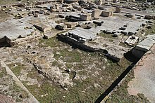
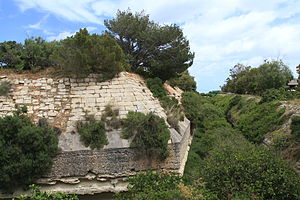
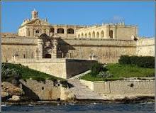
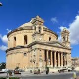
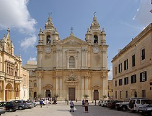

Málta
Málta egy gyönyörű szigetcsoport Európa és Afrika között a Földközi tenger közepén.
Három lakott (Malta, Gozo, Comino) és számtalan lakatlan szigetből áll.
-Éghajlata mediterrán.
-Réteges felépítésűek
-Üledékes kőzetek
-Mészkő
-Fő építőanyag: globigerinás mészkő
-Ipar: elektronikai ipar, hajóépítés és javítás, építőipar, élelmiszeripar, gyógyszergyártás, cipőgyártás, dohány
-Üledékes kőzetek
-Mészkő
-Fő építőanyag: globigerinás mészkő
-Ipar: elektronikai ipar, hajóépítés és javítás, építőipar, élelmiszeripar, gyógyszergyártás, cipőgyártás, dohány
-Fővárosa Valetta.
-Államforma: köztásaság
Látnivalók:
Az országhoz két túránk is tartozik, egy északi és egy déli.
Észak-Málta túra
Utazásunk a Tas-Silġben kezdődik.

-Ez egy ókori görög és római lelőhely.
-Valamikor kr.e. 3500-4000 között épült.
-Ez egy ókori görög és római lelőhely.
-Valamikor kr.e. 3500-4000 között épült.
Ezután meglátogatunk egy néhány kilométerre lévő brit katonai bázist, a Fort Tas-Silġet.
20 perc utazás után megérkezünk Ħaġar Qimbe, ahol egy ókori templomegyüttest fogunk meglátogatni.

-Építése 1879-ben kezdődőtt meg és 1883-ban fejeződött be.
-Építése 1879-ben kezdődőtt meg és 1883-ban fejeződött be.
Dél-Málta túra
Utazásunkat a Gżirában kezdjük, egy 18. századi francia háborús erődben.

-1800-ban brit irányítás alá került.
-1800-ban brit irányítás alá került.
Innen negyed óra alatt eljutunk Mosta belvárosába, ahol megnézzük a Mosta Rotundát, a város templomát.

-1833-ban épült.
-A második világháború alatt megmenekült a bombázásoktól.
-1833-ban épült.
-A második világháború alatt megmenekült a bombázásoktól.
Innen délre haladva elérjük Mdina városát, ahol megnézzük a Szent Pál társkatedrálist és a város keleti bástyáját, ahonnan rá lehet látni
a sziget nagy részére.

-1697 kezdődött meg építése, 1702-ben fejeződött be.
-1697 kezdődött meg építése, 1702-ben fejeződött be.